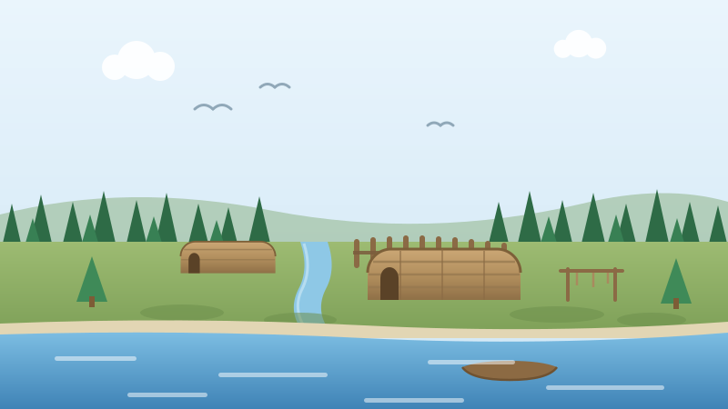

🌲 For Kids
Who Lived Here Before the Towns
Stand beside Lake Ontario today and you see roads, houses and schools. Six hundred years ago, other people lived on this same ground.

People have lived beside this lake for a very long time. Their story is not lost. Three groups of nations lived here, one after another, and we know their names.
The Huron-Wendat, about 1400 to about 1650
Four nations joined together: the Cord, the Bear, the Rock and the Deer. Together they were the Wendat Confederacy. A confederacy is a group of nations that agree to act as one.
They lived in long wooden houses, called longhouses, in villages north of the lake. A village stayed in one place for about fifteen to twenty years. When the soil grew tired and the firewood nearby ran out, everybody moved a short way and built again.
French traders called them Huron. That was a nickname, not their own name. Their own name is Wendat, and that is the name we use today.
The Haudenosaunee, about 1650 to about 1695
The Haudenosaunee came from the other side of the lake. Their name means people of the longhouse.
Their confederacy began with five nations: Mohawk, Oneida, Onondaga, Cayuga and Seneca. The Tuscarora joined in 1722, and then there were six.
Beaver fur was worth a great deal of money in those years, and the best beaver lived north of the lakes. For about fifty years this shore was Haudenosaunee hunting ground, with villages along the water.
The Mississaugas, about 1695 until now
Then the Anishinaabe came down from the north. One group of them, the Mississaugas, held the western end of Lake Ontario. Their territory was about four million acres.
They moved with the seasons and took what they needed. Every spring they gathered at the fishing grounds, where the creeks and rivers run into the lake.
Between 1781 and 1820 they signed a series of treaties with the British Crown. At the end of those treaties, the land they held was two hundred acres beside the Credit River.
One of those treaties is Treaty 22, signed on 28 February 1820. Signs on that land today say: we are all treaty people.
Now try three questions
No timer and no score to worry about. Every answer tells you why.
About this quiz
This story is about the people who lived beside Lake Ontario before the towns: the Huron-Wendat, the Haudenosaunee and the Mississaugas of the Credit, and Treaty 22 of 1820.
It is written in short sentences for children aged six to nine, with a picture drawn for this site and three questions at the end. The facts come from the interpretive signs written by the Mississaugas of the Credit First Nation.
More to explore
First Nations, Inuit and Métis — the story for kids · More true Canada stories for kids